AhaDiff User Guide
AhaDiff turns a git diff into a code-grounded lesson, a list of verifiable claims, a quiz, review cards, a concept graph and a quality ratchet. It is local-first by default: each repository keeps its own AhaDiff state under .ahadiff/.
pip install ahadiff. The English walkthrough shows this; the Chinese Bilibili cut is being refreshed to match.1. Quick Start
Install the published CLI from PyPI. Contributors can still run from a source checkout when developing AhaDiff itself.
Install
Install the CLI and bundled WebUI with pip.
Develop from source (contributors)
Sync the locked dev environment, then confirm the module runs.
First-time use in a repository
When you first use AhaDiff inside a repo, initialize it and confirm the environment.
Everything AhaDiff generates lives in this repo. There is no global database.
The storage gate accepts these SQLite builds
uv tool ships SQLite 3.50.4 on Python 3.11.14. Already accepted.
Run ahadiff doctor before your first learn session to confirm your SQLite build clears the gate; it reports the detected version and the required threshold, and fails closed when the build is too old. A higher version number is not automatically accepted. The gate requires SQLite 3.51.3 or newer, or a backported 3.50.4+ / 3.44.6+ build, so 3.51.0-3.51.2 fall below the bar and are not accepted. If ahadiff doctor flags your build, switch to a Python whose bundled SQLite meets the bar, for example uv tool, the python.org installer, Homebrew, or conda.
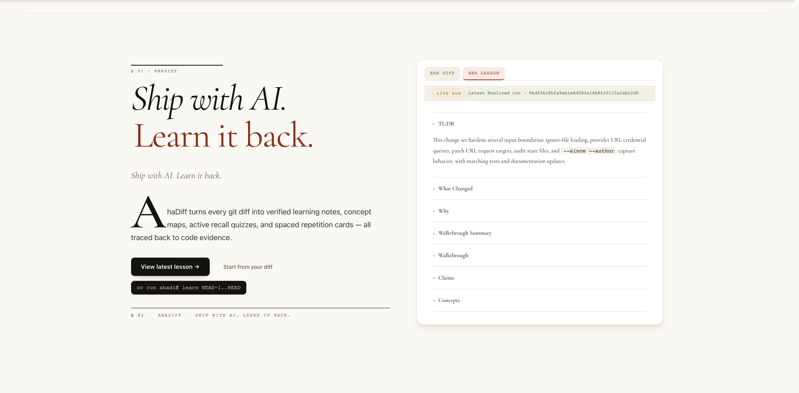
- Serif hero headline: Ship with AI. Learn it back.
- Drop-cap intro paragraph describing AhaDiff.
- View latest lesson CTA next to a
uv run learnsnippet. - Right card previews the latest finalized run's lesson outline.
2. Configure a Provider
Configuring one LLM provider is the only setup step before ahadiff learn. There are two paths. From the CLI, the key goes in an environment variable and you hand AhaDiff only the variable name. From the WebUI Settings, you paste the plaintext key and AhaDiff stores it for you (see "How the WebUI stores your key" below). Either way, no key ever lands in Git, the README, manifests, or checked-in scripts.
What provider test does
.ahadiff/config.toml.Accepted key env-var names in repo config:
Name
--api-key-env is the variable NAME. An identifier-shaped value fails closed when the variable is unset, so a name is never sent as a bearer token by accident.
Secret
On this CLI path the real key stays in your shell environment and never goes in a flag. The WebUI path is different: it writes the plaintext key to .ahadiff/.env (see below). Both ways keep the key out of Git.
Provider setup
Run ahadiff serve and add a provider in Settings (the card previews model limits before you save, with no remote call and no key read), or run one provider test from the matching tab below.
Export your key and provider base URL, then run one probe.
Read the key without echoing it, then probe a Responses/API provider example. On macOS / Linux:
On Windows PowerShell, read it with Read-Host -AsSecureString:
Point at a local OpenAI-compatible server. Ollama and LM Studio expose their own base URLs.
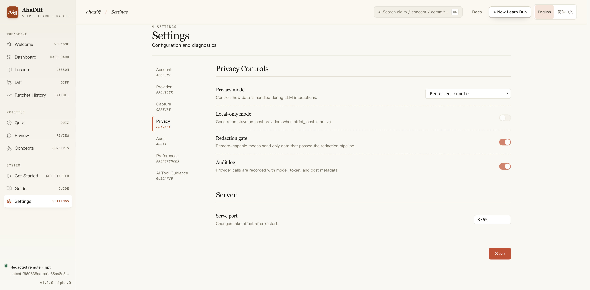
- Left settings rail: Account, Provider, Capture, Privacy, Audit.
- Privacy Controls: privacy mode, local-only, redaction gate, audit log.
- Server section with the serve port field and a Save button.
How the WebUI stores your key
In Settings you paste the plaintext key directly into the API Key field; you do not type a variable name there. AhaDiff then:
- Generates a unique reference name shaped like
AHADIFF_<ALIAS>_KEY. Uniqueness avoids names already in your system environment and names already in.ahadiff/.env, adding a numeric suffix on a clash (for exampleAHADIFF_DEMO_2_KEY). - Writes the plaintext key only into the repo-local
.ahadiff/.envfile. On POSIX the file ischmod 0600; on Windowschmodis not equivalent to a POSIX owner-only ACL, so it is best-effort and not strong isolation. - Makes sure the secret patterns (
.env,.env.*,audit.private.jsonl,*.lock, and*.log) stay git-ignored: it creates.ahadiff/.gitignoreif it is missing, and if you already have one it appends only the missing secret lines (your existing lines are preserved). Either way the key file is ignored by a normalgit add(a forcedgit add -fcould still override it). - Stores only the reference name in
config.toml(api_key_envequalsAHADIFF_<ALIAS>_KEY); the plaintext is never written toconfig.toml. - When you save with an API key in the field, probes the provider to validate connectivity. This is best-effort: a failed probe does not block the save, and the UI shows the validation result. Updating an existing provider with the key field left blank keeps the current key and skips the probe (verification is empty).
On startup, both serve and the CLI load .ahadiff/.env into the process environment. If a variable with the same name already exists in the system environment, the system value takes precedence and is not overwritten.
Deleting a provider cleans up its entry in .ahadiff/.env, but only unreferenced entries that use the AhaDiff-reserved AHADIFF_ prefix. System or shared env names (such as OPENAI_API_KEY), and names still referenced by another provider, are left untouched. Cleanup keys off the AHADIFF_ prefix and the reference count, not a record of which line AhaDiff authored, so keep that prefix reserved for AhaDiff and avoid hand-authoring your own AHADIFF_* variables in .ahadiff/.env.
The CLI path is unchanged: ahadiff provider test --api-key-env NAME still uses an environment-variable name, and it can now also resolve a reference name from .ahadiff/.env. An identifier-shaped value that is not a set environment variable fails closed (it is not sent as a literal key); a value containing dashes is used as a literal key.
Windows note: the local .ahadiff/.env is protected by NTFS folder permissions rather than POSIX 0600. For stricter handling, point api_key_env at a real OS environment variable (it takes precedence and is never written to .ahadiff/.env). For at-rest protection, use full-disk encryption such as BitLocker (or FileVault on macOS).
Registry context example
openai
openai accessopenai_responses / API
For gpt-5.5, the bundled registry keeps these two context profiles. A trustworthy live probe can override either profile when the endpoint reports a real total context.
Once configured, your single provider (or the generate provider/model you pick in Settings) is used by ahadiff learn automatically. Pass --provider / --model only to override one run.
How a saved max_output_tokens is treated
Empty → Auto
No value means AhaDiff sizes the output limit for you.
Trusted hard max
A known, trusted ceiling is clamped on save and returns a warning.
Unknown / low-confidence / route-specific / local-runtime
These stay warnings only. They are not treated as a hard guarantee.
Local server reports the wrong JSON capability?
Set only known boolean overrides in .ahadiff/config.toml. NewAPI defaults to supports_native_json_schema=false; if your gateway supports native JSON schema, add the override.
3. Run a Learn Session
Pick a diff source
AhaDiff has 10 capture sources. Pick the tile that matches what you changed.
Generate the lesson and evidence
AhaDiff captures the diff, scans for safety issues, and produces claims, lesson, quiz, score and other artifacts.
Open the WebUI to learn
Read the Lesson for the explanation, jump to Diff for the evidence, take the Quiz to check understanding, and use Review for spaced repetition.
Run the source that matches what you changed. The Dashboard's New Run dialog mirrors these same groups.
ahadiff learn --lastgit add first.ahadiff learn --stagedahadiff learn --unstaged --include-untrackedahadiff learn --since "2 hours ago"ahadiff learn HEAD~1..HEADahadiff learn --patch change.diffahadiff learn --patch -ahadiff learn --patch-url URLahadiff learn --compare old.py new.pyahadiff learn --compare-dir old/ new/--against-spec SPEC.md to any of these to check the diff against a spec; add --spec-semantic-review for the semantic pass.--since alone vs --since --author
--since
--since --author
Patch and URL captures carry caveats:
The WebUI patch field accepts pasted unified diff text up to 65536 bytes; use the CLI for patch files, stdin, or larger patches. CLI patch files resolve inside the repo root; pass --patch - for externally generated patches.
Long-running CLI commands show Rich status while they run. Treat that as terminal feedback, not a machine-readable output contract.
4. Use the WebUI
Run one of these to open the local React SPA. serve opens a browser by default; add --no-browser to keep it headless, or --watch to auto-learn when working-tree files change.
Workflow at a glance
Page map
| Page | What it's for |
|---|---|
/ | Dashboard: latest runs, KPIs, ratchet trends, and review activity. |
/run/:runId | Run detail: Overview, Score, Judge, Artifacts. If the optional LLM judge fails, the Judge tab shows a redacted failure panel instead of raw provider output. |
/run/:runId/lesson | Lesson body, claim summary, evidence, and knowledge notes. |
/run/:runId/diff | Unified/Split diff, claim dots, and the ClaimInspector. |
/run/:runId/quiz | Guided / Recall / Transfer questions. The mode badge says whether the current question is a one-time Socratic quiz or an SRS review card. |
/review | FSRS review queue with Again / Hard / Good / Easy grading. |
/concepts | Concept ledger, concept graph, and Graphify source. |
/ratchet | Result history, benchmark summary, improve preview, and export entry points. |
/settings | Providers, capture, privacy, audit, preferences, and project-level AI tool guidance. AI Tool Guidance groups targets as CLI / IDE / CI, shows usage hints, and includes a provider-free built-in demo. |
/guide | Daily commands and the 15 project AI tool guidance targets. It shows category filters, usage hints, and what each target would write before you apply changes; writing and removal stay in Settings → AI Tool Guidance. |
.claude/skills/ahadiff/SKILL.md.agents/skills/ahadiff/SKILL.md.gemini/skills/ahadiff/SKILL.md.agents/skills/ahadiff-antigravity/SKILL.md.agents/skills/ahadiff-antigravity-cli/SKILL.md.agents/rules/ahadiff.md.github/instructions/ahadiff.instructions.md.opencode/agents/ahadiff.md.clinerules/ahadiff.md.continue/rules/ahadiff.md.cursor/rules/ahadiff.mdc.roo/rules/ahadiff.md.windsurf/rules/ahadiff.md
CLAUDE.md, AGENTS.md, GEMINI.md, and .github/copilot-instructions.md. This repository ignores generated .agents/ installs so local Codex / Antigravity skill output is not committed by default. Common Commands covers the hooks target and MCP registration.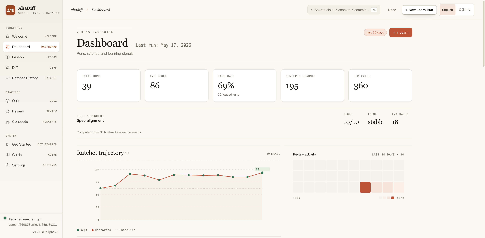
- Top stat cards: total runs, avg score, pass rate, concepts, LLM calls.
- Spec alignment block with score, trend, and evaluated count.
- Ratchet trajectory line chart of kept vs discarded scores.
- Review activity heatmap calendar on the right.
Claims and the diff
Every claim links to file:line evidence and carries one of five badges. Glyphs and semantics are the product's real ones; the hues are mapped to this page's palette.
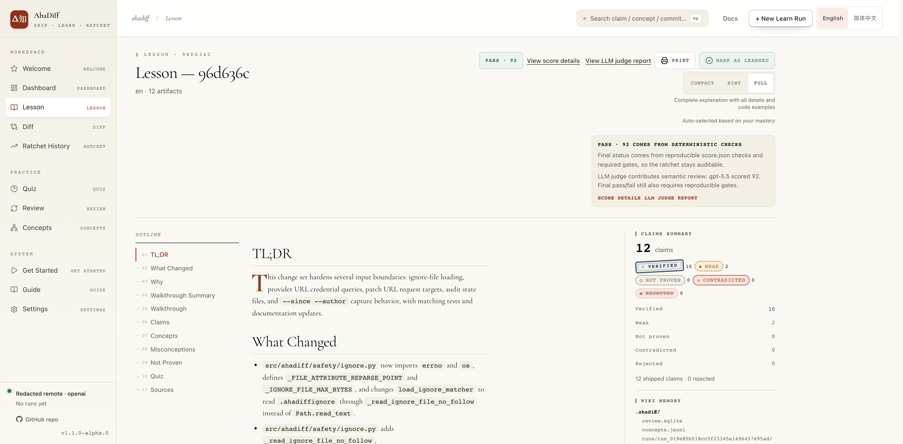
- Header with PASS score, View score details, Mark as Learned.
- Compact / Hint / Full detail-level toggle, top right.
- Left outline rail: TL;DR, What Changed, Claims, Concepts.
- Right claims summary: verified / weak / not proven counts.
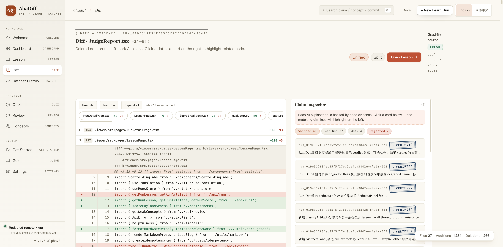
- Center code diff with red/green added and removed lines.
- File tabs and Unified / Split view toggle above the diff.
- Right Claim Inspector panel listing per-claim cards.
- Verified claim badges link the explanation back to code lines.
Quiz and review
Review grades each card; the grade drives the next due date.
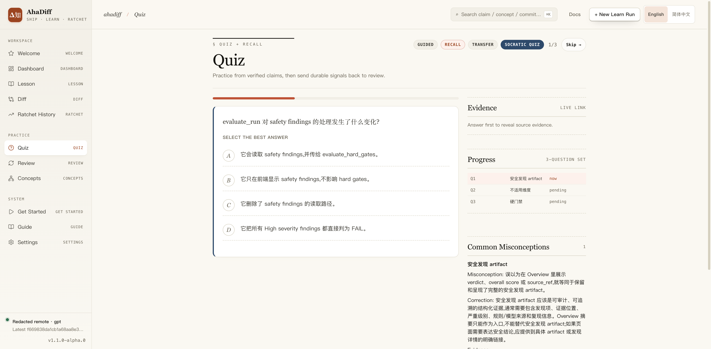
- Single multiple-choice question with A/B/C/D options.
- Guided / Recall / Transfer mode tabs and progress counter.
- Right Evidence panel locked until you answer.
- Right Progress list of per-question status (pending).
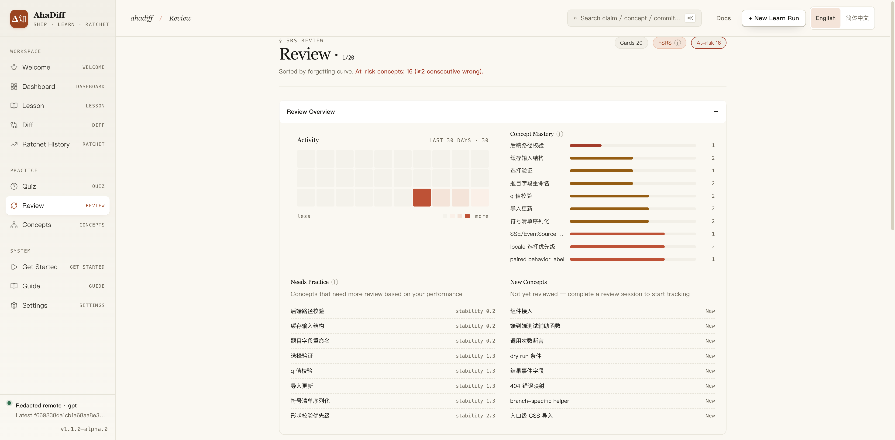
- Header counts: cards due, FSRS, at-risk concepts.
- Review Overview activity heatmap and Concept Mastery list.
- Needs Practice list with per-concept stability values.
- New Concepts list marked New on the right.
Concepts
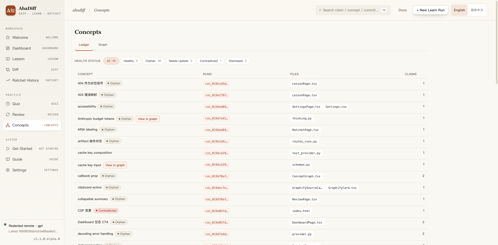
- Ledger / Graph tabs and Health Status filter counts.
- Table columns: concept, runs, files, claims.
- Per-row health tags like Orphan and Contradicted.
- Run and file links per concept row.
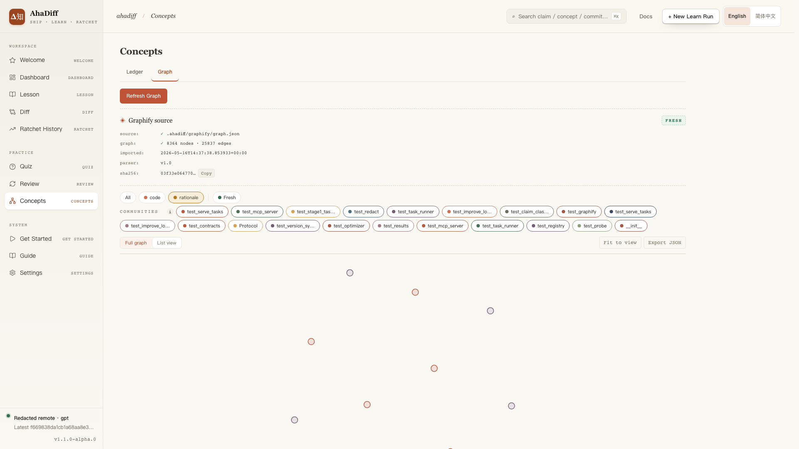
- Ledger / Graph tabs with a Refresh Graph button.
- Graphify source card: node/edge counts, FRESH badge, sha256.
- Community filter chips and All / code / rationale filters.
- Canvas of graph nodes below with Export JSON, Fit to view.
5. Common Commands
Daily work runs through learn, quiz, and review. The clusters below cover everything else: serving the UI and managing local data.
Daily loop
Learn and verify
Generate a run, then check, grade, and improve it.
Serve
Open the local WebUI. --watch adds auto-learn on working-tree changes.
Watch
Auto-learn on working-tree changes. ahadiff serve --watch runs the same watcher with the WebUI attached.
improve-run RUN_ID regenerates a lesson and keeps the new copy only when the deterministic score strictly improves, saving it as a separate run and leaving the original untouched. Use --candidates N (default 3, range 1-10) to control how many regeneration attempts are tried; a higher value improves the chance of beating the score but costs more tokens and time. It works in any install, including pip. The separate improve command tunes AhaDiff's own generation prompts and only runs inside an AhaDiff source checkout.
Maintenance clusters
Database
Run the SQLite integrity gate over review.sqlite.
Graph
Inspect and re-import the Graphify artifact.
Concepts
List, verify, and lint the concept ledger.
Export
Write results to disk for sharing (see Export & Share).
Challenge
Opt-in. Build a challenge from a run, then check state.
MCP
AhaDiff ships a read-only MCP server with 7 tools: runs, run summaries, due cards, search, concepts, stats, and lesson Q&A. Register it once per repo:
Git hooks
ahadiff install hooks writes reminder-only git hooks. After each commit the post-commit hook prints one line: run ahadiff learn HEAD~1..HEAD to learn back this commit. Before each push the pre-push hook prints a verify reminder. The hooks never run learn, never block a commit, and swallow their own failures. Add --auto-learn for hands-free mode: the post-commit hook runs ahadiff learn --last in the background and appends output to .ahadiff/hooks.log. Commits from GUI clients work too: the hook falls back to the ahadiff path recorded at install time, and appends a skip line to the log instead of blocking the commit if it still cannot find ahadiff. The learnability gate still applies, so trivial commits skip before any LLM call. When two commits land in quick succession, the per-repo write lock stops the second learn; check the log or re-run ahadiff learn --last yourself. Re-run ahadiff install hooks with or without the flag to switch modes in place. macOS/Linux only.
Refresh vs learn: what touches Graphify
graph refresh / WebUI refresh
graphify update.learn run
graphify update first when the Graphify CLI is present, then imports.6. Export & Share
The Ratchet / Export entry points in the WebUI offer four formats. The CLI covers the same ground.
Static preview
A strict-local static bundle with a deterministic zip. Nothing leaves the machine.
TSV
Results as tab-separated values for spreadsheets.
JSON
Results as JSON for scripts and tooling.
Anki .apkg
Active review cards as an Anki deck.
No extra install needed.
pip install ahadiff because genanki is bundled.7. Capabilities: Defaults, Opt-ins, and Dependencies
Capability pills distinguish default behavior from opt-in flows and dependency-backed exports. Open Details on any card for the exact behavior.
Default Works after install
Lesson / Claims / Quiz / Score
The default pipeline, produced after ahadiff learn.
Details
Which artifacts get created depends on the diff and its learnability. Patch-only captures can use weak diff-anchored claims when symbol-level proof is missing. In Quiz, source evidence stays locked until you answer.
Optional LLM judge
Advisory only; the deterministic score stays primary.
Details
Successful judge runs write judge.json. Failures write a bounded, redacted judge_failure.json with provider, model, error type, and a safe message. Missing judge artifacts return 404 rather than crashing the API.
Quiz question count
Fixed at 3 by default; adaptive is opt-in.
Details
Fixed mode accepts 1-30 questions. In Settings, or with --quiz-mode auto, AhaDiff uses diff stats to choose a bounded count; the default adaptive range is 3-12.
Structured JSON output
JSON object mode with one validation retry.
Details
Public artifacts stay the same. Native schema is used only when the provider capability reports support. Unsupported modes downgrade; truncated or malformed fallback JSON is retried, not accepted.
Adaptive capture limits
Auto for fresh configs; manual once you customize a limit.
Details
Auto mode sizes capture limits from five inputs:
Editing any of these migrates the repo to manual mode:
capture.max_files
capture.hard_limit
capture.max_patch_bytes
Provider smart config
Draft model-limit preview in Settings before you save.
Details
The provider card previews limits from the draft provider class, model, and optional limits profile, with no remote probe on every edit. It shows thinking support, low-confidence warnings, a recommended max-output, and any clamp the save API returns. Generate and judge limits are shown separately.
WebUI
Welcome, Dashboard, Diff, and Review open with ahadiff serve.
Details
The Welcome Before/After demo collapses long raw diffs to the lesson height and shows visible / total line counts. Short or empty diffs have no collapse control.
AI Tool Guidance
Settings writes the files; Guide is read-only.
Details
Settings shows for the 15 install targets:
- CLI / IDE / CI grouping
- Localized quick-start steps
- Example prompts and expected behavior
- Platform notes
- A provider-free local demo
Settings
Writes files with guarded atomic replacement.
Guide
Read-only preview of the same hints and file writes; no write / remove buttons.
Opt-in Off until you turn it on
Challenge
Off by default; enable via config.
Details
The CLI exposes build / status; full progression happens through the WebUI / API.
Spec alignment
Runs only with --against-spec.
Details
Add --spec-semantic-review for the semantic pass. A run with no spec renders this dimension as N/A.
Dependency Needs an extra or external artifact
LLM provider (BYOK)
AhaDiff runs on the LLM provider you configure: any of the 8 supported formats, your choice of model. No specific model is required. Set it up in Configure a Provider.
Details
Set the provider, base URL, model, and the API-key environment variable before use.
APKG export
Works by default; genanki is bundled.
Details
APKG export works by default with pip install ahadiff because genanki is bundled. Active review cards export without any extra install.
Serve --watch (serve + auto-learn)
Works by default; the file watcher is bundled.
Details
The file watcher is included by default, so ahadiff serve --watch works out of the box: it serves the WebUI and auto-learns on working-tree changes — the same watcher as ahadiff watch. You can also run ahadiff learn manually.
Watch (auto-learn)
Filesystem-driven auto-learn for working-tree changes.
Details
ahadiff watch watches the working tree (unstaged and untracked files) and runs learn on change. Defaults: 2.0s debounce, 30.0s cooldown. --dry-run captures the diff without generating a lesson; --force-learn bypasses the learnability gate. Run it from any directory. Keep its log file outside the repo: a log inside the watched tree re-triggers the watcher.
Graphify refresh
Imports an existing artifact; capped at 50000 nodes.
Details
It re-imports graphify-out/graph.json into AhaDiff's cache and does not run graphify update. The cap is graph.max_nodes_import (default 50000); over-limit refreshes return GRAPH_NODE_LIMIT.
How a run is scored
Eight dimensions, 100 points. A run can fail on score gates, contradicted claims, evidence coverage, or safety gates.
critical_safety_findings fire.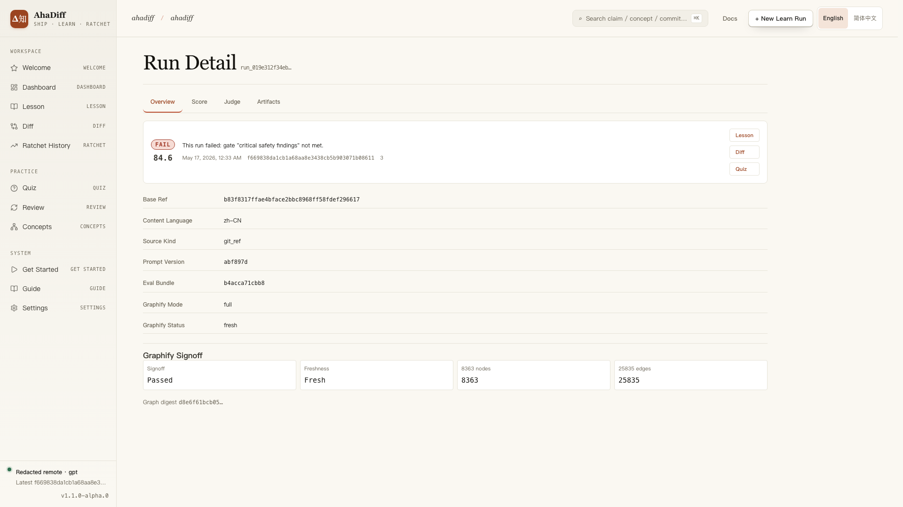
- Overview / Score / Judge / Artifacts tab bar.
- FAIL banner with score and failed-gate reason.
- Metadata rows: base ref, language, source kind, prompt version.
- Graphify Signoff cards: passed, freshness, node and edge counts.
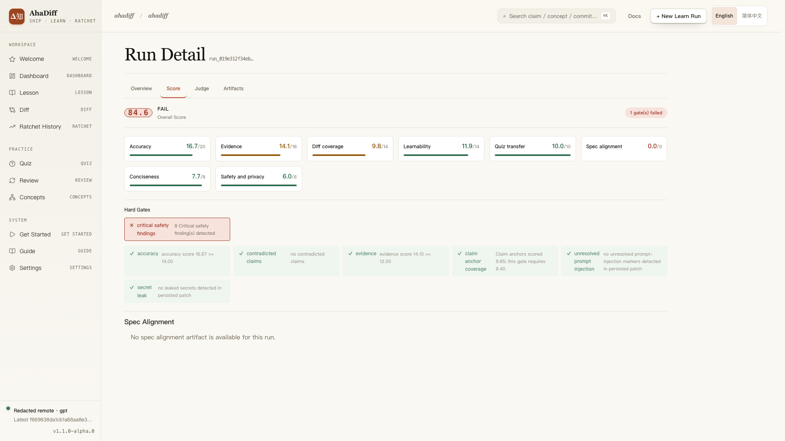
- FAIL badge, overall score, and the count of failed gates.
- Eight scored dimension cards with progress bars.
- Hard Gates row; critical safety findings fail in red.
- Spec Alignment section noting no artifact for this run.
8. FAQ
Why is there no Lesson / Diff / Quiz?
These pages need a specific run_id. Run ahadiff learn at least once, then open the corresponding run from the Dashboard or from the command's output.
What if the provider fails?
Run the diagnostics and re-test the provider. On Windows PowerShell, set the variables with the $env: form and pass --base-url $env:AHADIFF_PROVIDER_BASE_URL, as shown in Configure a Provider.
Then rerun the matching provider command from Configure a Provider.
What if the lesson gets skipped?
The diff might be too small, learnability might be too low, or there aren't enough verified claims. If you're sure this is the change you want to study, re-run with --force-learn.
How do I change quiz question count?
Use Settings → Preferences. Fixed mode always asks the configured number of questions, from 1 to 30. Adaptive mode uses the captured diff stats; its default range is 3-12, and old runs without those stats fall back to the fixed count.
How are capture limits chosen?
New repos use auto capture sizing on a priority ladder:
Manual mode keeps the numbers you set in config or Settings. The Settings provider form previews these limits from the unsaved draft, with no remote probe.
Does the LLM judge decide the final verdict?
No. The final verdict comes from deterministic score.json and hard gates. judge.json is advisory; it helps explain model feedback, but it does not override the deterministic verdict. If a dimension is not applicable, such as spec_alignment on a no-spec run, Score and Judge render it as N/A / 0/0.
Why can Accuracy / Evidence gates change?
The base thresholds hold:
Large diffs can use an adaptive threshold from visible files, hunks, and changed lines, with ratio, regime, and basis written to hard_gates.*.policy. This never forgives bad evidence. The run still fails when:
How is Diff Coverage judged?
Diff Coverage uses only the visible files and hunks in the persisted line_map.json:
Omitted files do not enter the denominator. The hunk-count floor keeps tiny hunks counting. The hard gate writes its ratio, regime, and visible basis into the gate detail.
What safety findings fail a run?
An unmitigated Critical safety finding fails the run. A Critical secret finding is treated as mitigated only when the local capture record shows a complete redaction shape, including the rule, hash, source, line, and column.
Can you guarantee there are no bugs?
No. AhaDiff reduces risk by keeping data local, linking lesson claims to diff evidence, and exposing deterministic score and hard-gate details. You should still review generated lessons and run your normal test suite before relying on a change. For release status, use the current GitHub Actions and release notes instead of this static guide.
9. About
Screenshots in this guide are examples only. They carry no real provider credentials, repository contents, or user data.
Platform support
macOS and Linux are the primary tested platforms. Windows runs the core flows; two features stay POSIX-only.
| Feature | macOS · Linux | Windows |
|---|---|---|
| Core CLI | ✓ | ✓ |
serve + WebUI | ✓ | ✓ |
--compare-dir | ✓ | ✗ |
hooks install target | ✓ | ✗ |
| Install rollback | ✓ | partial |
--compare-dir needs the secure directory file descriptor available on macOS / Linux only, and fails closed elsewhere. The hooks target uses POSIX shell hooks. Hooks are reminder-only by default; see the Git hooks card for the --auto-learn variant. Rollback restores mode before atomic replace on POSIX, and uses a best-effort mode restore after replace where fchmod is missing.Validation snapshot
Local checks recorded for the current docs snapshot. Release and CI status belong in GitHub Actions.